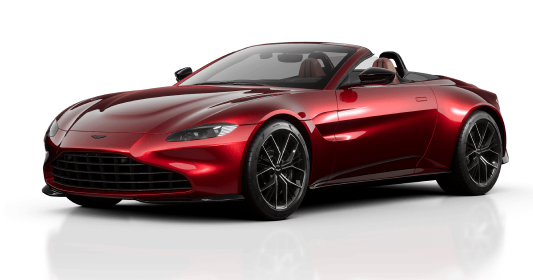

DBS ULTIMATE 700
Por mais de meio século, o nome DBS significou apenas uma coisa: a produção definitiva do Aston Martin.
Saiba Mais

Vantage é cru e instintivo, inabalável em seu propósito singular: dominar os sentidos através de seu design de renome mundial, desempenho ágil e habilidade artesanal dedicada. Saiba Mais
Velocidade e qualidade aston martin!
Obtenha os nossos melhores carros e seja seu sonho, desempenho ágil mais habilidade artesanal.
Saiba Mais
